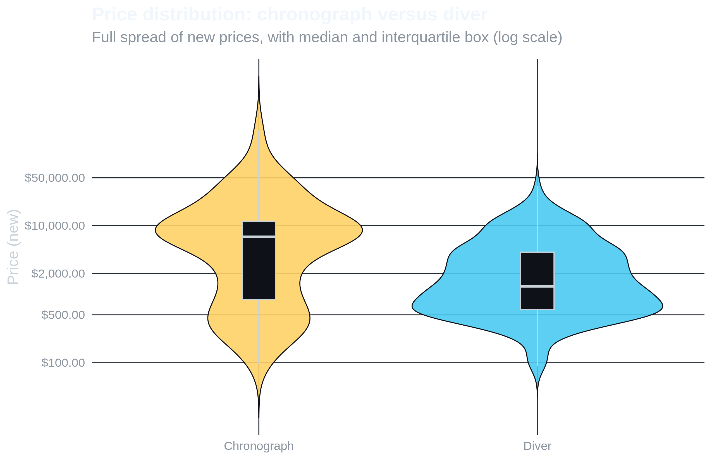
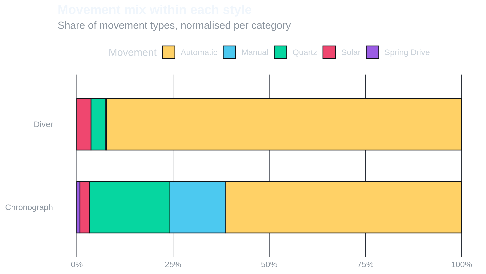
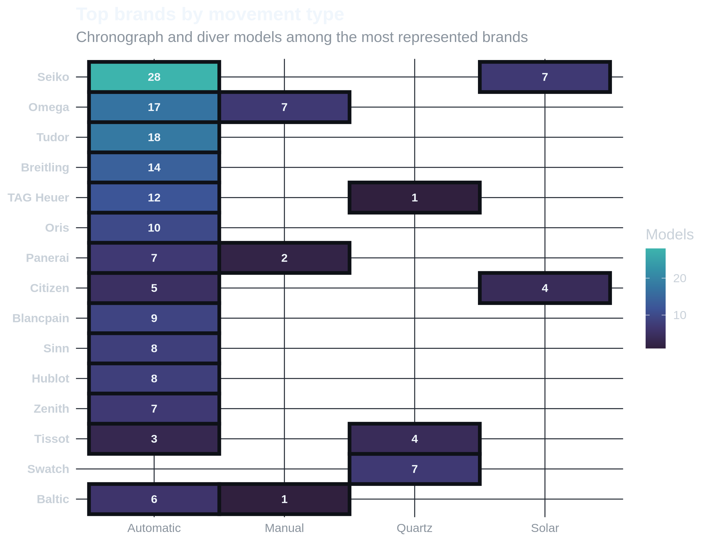
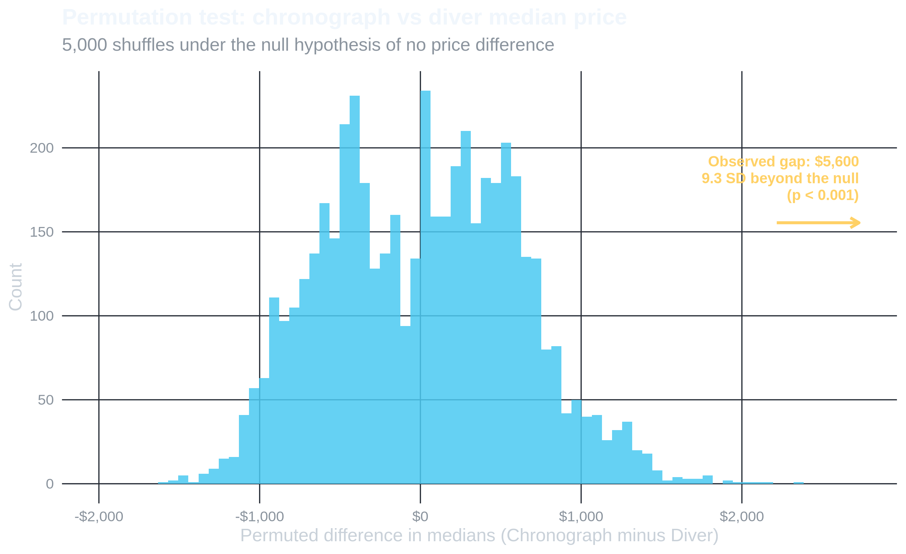

Chronographs vs. Divers
Two of the most collected styles, compared on price, movement, and who builds them.
Chronographs and divers are the two pillars of most collections, so they make a natural head to head. One is built to time things, the other to survive underwater, and that difference shows up in price, in the movements they run, and in which brands lean into each. The charts below swap the old pie slices for views that actually let you compare.
Price, side by side
Rather than a single bar for the average, the plot below shows the entire price distribution for each style. The width of each shape is where watches pile up, and the slim box inside marks the median and the middle fifty percent. The axis is logged so the affordable end stays readable next to the expensive outliers.
Chronographs sit higher and spread wider, with a fat upper tail from the panda-dial icons and integrated calibers. Divers cluster tighter and lower, which fits their reputation as the more accessible everyday tool watch.
What is ticking inside
Counts alone favour whichever style has more entries, so this view shows the share of each movement type within each category. Reading it as percentages makes the mix directly comparable even though there are more divers overall.

Both styles run mostly automatic, but divers lean on solar and quartz more than chronographs do, since a dive watch values dead-reliable timekeeping over mechanical romance. Manual winding is the rarity in both, kept alive on the chronograph side largely by a few heritage references.
Who builds them
This heatmap replaces the two pie charts entirely. It puts the most represented brands against movement type, with each cell counting how many chronograph and diver models that brand fields. Brighter cells mean more models, so you can spot at a glance where a brand concentrates its effort.

The affordable Japanese names dominate the automatic column through sheer model count, which is why divers feel so plentiful at the low end. The Swiss houses spread thinner but reach into the higher value mechanical and chronograph territory. The quartz and solar columns light up exactly where you would expect, on the brands built around tough, set-and-forget tool watches.
Is the price difference real?
The violin plot earlier made it look like chronographs cost more than divers. But is that gap meaningful, or could it be a coincidence of which watches ended up in this particular dataset? A permutation test answers that directly.
The idea is simple: under the null hypothesis that watch type has nothing to do with price, shuffling the Type labels should produce the same kinds of median differences as the real data. We shuffle 5,000 times, record the difference in medians each time, and see where the actual observed gap lands inside that null distribution.

The blue histogram is every world where Type labels were random noise, and it never strays far from zero. The real gap is so far past it that it does not fit on the same axis, which is exactly the point: the dataset strongly supports the claim that chronographs price higher than divers, with a p-value of < 0.001.
A bootstrap 95% confidence interval for the median difference puts the true gap between $3,520 and $6,805. That range is the honest answer to how much more a chronograph actually costs, accounting for sampling uncertainty in this dataset.
One caveat worth being straight about: this dataset was built from best-knowledge approximations rather than live transaction data. The inference describes the structure of this collection, not a verified claim about the global secondhand market.